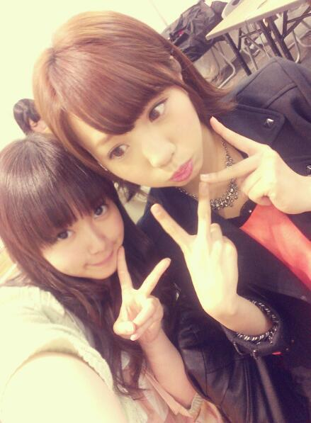

| 2013/05 16 Thu | ひめたん(*>ω<*)そ の297 |
整体に。行きました。
アイドルさんで学生さんだと
どうしても不定期にはなっちゃうけど
大きなお仕事期間前に
整体とマッサージのダブルパンチで
からだをリフレッシュさせてあげるのー( ^ω^ )
明日はマッサージー♪るん
みなさーんもね、疲れたなー
自分じゃどうしようもならんわこりゃー
ってなったときは
プロにまかせてみよう。おけい？
はーいそんなわけで
とうとう水泳後に髪を何とかしようとして
編み込みツインでごまかすようになった
乙女の荒業(｀・ω・´)
どやってるわけではないんだけどねー
いやーおにゃーのこやなーひめたんって。
そんなあたしは最近
語彙力を伸ばしたいなーと
ある日いきなり思ったわけです
博識のみーなさん
あたしに何か教えてー♪

アイドルさんで学生さんだと
どうしても不定期にはなっちゃうけど
大きなお仕事期間前に
整体とマッサージのダブルパンチで
からだをリフレッシュさせてあげるのー( ^ω^ )
明日はマッサージー♪るん
みなさーんもね、疲れたなー
自分じゃどうしようもならんわこりゃー
ってなったときは
プロにまかせてみよう。おけい？
はーいそんなわけで
とうとう水泳後に髪を何とかしようとして
編み込みツインでごまかすようになった
乙女の荒業(｀・ω・´)
どやってるわけではないんだけどねー
いやーおにゃーのこやなーひめたんって。
そんなあたしは最近
語彙力を伸ばしたいなーと
ある日いきなり思ったわけです
博識のみーなさん
あたしに何か教えてー♪

 ひめたんはショートにしないんですか？
ひめたんはショートにしないんですか？
(してほしくはないです。笑)
自分で一番似合うと思う髪型は？
じゃあしません。笑
今までもショートしたことないんよねー
そんで怖いんでしようとも思いません(ω)
よくしてるのはハーフアップだけど
ツインもすき。くるくるーのツインすきー
ねー何が似合うと思うー？
喧嘩したとき相手より先に謝りますか？
それとも後ですか？
けんかにならないルートを
探って通るタイプではあるけども。笑
まあーそうだなー悪いことしたなーて時は
自分から謝るかなー。
ゆーか最近ケンカした記憶ないー
走高跳で自己ベスト更新しました！
誉めてくれると嬉しいな
おーめでとーうお疲れさま∩^ω^∩
もうねーひめたは運動はめっきりだめなので
運動に関しては誉められたことがないので
なんかいいなー憧れるなーかっこいーなー
とりあ休んでね♪
これからも応援してまーすっ
今までやった乃木坂のライブやイベントで
1番印象に残ってるのは何ですか?
やっぱしデビュー一周年記念ライブかな！
もうめーちゃ楽しかったの(〃ω〃)るん
あとは、去年の夏のキャンペーンで
ラジオとかさせていただいたのも楽しかったー
いくちゃんの良いところとアカンところを
教えてください(笑)
良いところは髪質ー♪
本人が気にしてるんであえて誉めました。笑
あかんとこはあれやな。
一緒に車のると、足とかのせてくる子ですー
まっそこがかわいいんだけどねー
あたしは嫌な気はしないけとねー( ^ω^ )
でもあんましよそでやってほしくないかなー
以前マイブームで
100万のたまごってアプリを紹介してましたが
どうですか割れましたか
友達から聞いてしまったの結末を。
それでアンインストールしましたー
あは。みんなは最後まで叩いて割るんだよー！
香川に来たいと思う?
おもう！
なんたって四国は上陸したことないのー
ぜひねーうどん食べ行きたいですよー(*^^*)
ひめたんたんは何か
嘘ついてる事ないんですか〜？
実は嘘ついてましたみたいな
エピソードある？
かの正直者のひめたんたんが嘘なんて
ついてると思うのかい？
そうだな。あえていうなら
ブラックひめたんは虚像だ(・∀・)
うωぅ
↑この子可愛くないですか！？
あ、なんかどうでもいいですね(笑)
どうでもよくない！むしろ大事や！
そしてかわいいー＊
くーって感じがしてかわいいねーうωぅ

追伸
今度の個握で一発ギャグ振るねー♪
ってコメントをちらほら見ましたが...
し、白目むくよ？
／(＊´・ω・＊)／しゃー
コメント(218)
2013/05/16 23:54